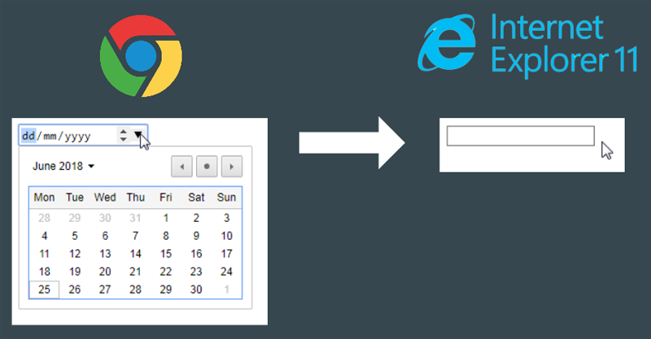

Progressive Enhancement
A plea for code quality in 43 slides by Accessabilly.
Elevators versus Escalators
When elevators stop working, they are useless.
When escalators stop working, they turn into stairs.
Key Principle
Expect technology to fail and offer a fallback.
With this principle, people were sent to the moon by the way…
3 Myths
- Progressive Enhancement is only for people who disabled JavaScript in their browser.
- Progressive Enhancement means double development effort.
- Progressive Enhancement is only to support older browsers.
…is only for People who disabled JavaScript in their Browser?
Wrong! Progressive Enhancement is for people,
- whose connection is too slow and JavaScript has not yet been initialized.
- whose connection was interrupted before JavaScript was finished loading.
- whose firewall, virus scanner or add-blocker blocked JavaScript.
- who have actually disabled JavaScript (about 1.1% - 2% of all internet users).
…is only to support older Browsers?
Wrong! The exact opposite is true.
- It reduces the testing effort in all browsers, because fallbacks are already built in.
- It makes the website future-proof, i.e. also executable for newer browsers and devices.
- It works in all browsers, while e.g. a pure JavaScript framework can only be as good as the browser behind it.
 Ethan Marcotte talking about "Device Agnostics", © Arnaud Delafosse
Ethan Marcotte talking about "Device Agnostics", © Arnaud Delafosse
…means double Development Effort?
Wrong!
- This is only true if you have not planned it in advance and try to implement it later.
- In the context of Universal Javascript we have the advantage that server and client can deliver (almost) identical states of the app, so this means basically one effort for two worlds.
- A little more effort is required in conception and programming, the cost-benefit calculation is not always simple and obvious, but adds up to a great gain in user-friendliness and user acceptance, especially in the long run.
It's all about Usability
It's about improving the user experience until certain JavaScript kicks in. The application can provide a bad-looking interface as long as JavaScript is not available, but the user still gets something from the server and can execute the basic functionality.
Many Truths
Progressive Enhancement is also about
- Usability
- Accessibility
- Performance
- Resilience
- Fault Tolerance
- Range
- Device Agnostics
- Future Viability
- Separation of Concerns
- Frontend Architecture
Who's doing it, too?
- gov.uk
- Shopify
- Filament Group
- BBC News
- The New York Times
- The Boston Globe
- etc.
3 Steps
- Identify the key functionality of the feature you want to implement.
- Provide this functionality with the simplest technology.
- Enhance!
Daily Life Example: Collapsible
"As a User of your website, I want to be able to hide content and display it with an interaction to avoid being overloaded with all content at once."
Identify the Core Functionality
Content should always be able to be displayed and should not be hidden even if JavaScript is not available.
Core Functionality in HTML
<h2><a href="#content" id="#trigger">
This is some cool content
</a></h2>
<p id="content">Why pamper life's complexity.
Where there's music and there's people. This charming man.
"Throw your skinny body down, son!".
And if a double-decker bus. The last night of the fair.
Driving in your car. Take me out tonight.</p>Additional Functionality in CSS
p {
max-height: 0;
overflow: hidden;
transition: max-height 0.5s ease-in-out;
}
html.no-js p, p:target, p.show {
overflow: auto;
max-height: 15rem;
}Enhanced Functionality with JavaScript
const trigger = document.getElementById('trigger');
const content = document.getElementById('content');
trigger.addEventListener('click', function(event) {
event.preventDefault();
content.classList.toggle('show');
}, false);3 Layers
- Semantic HTML
- CSS
- JavaScript
HTML - Base Layer
HTML - Base Layer
- HTML is completely error-tolerant, does not crash or return any error messages.
- It basically works on all devices and all browsers!
- Elements that are not (yet) known follow the principle of "Graceful Degradation".
- Semantic HTML already provides many desired functions and interactivity, e.g. links (!), buttons, forms (validation, interaction, date picker).
- HTML provides basic accessibility already.
Graceful Degradation
Graceful Degradation
This is a HTML inherent principle of fault tolerance that describes the ability of maintaining functionality when portions of a system break down.
Referring to the slide before, an <input type="date"> in modern browsers like Chrome is still working as <input type="text"> in older browsers like IE11.
CSS - Presentation Layer
CSS - Presentation Layer
- CSS is largely error-tolerant.
- Fallbacks are always possible, because unknown properties are simply ignored.
- Progressive Enhancment is CSS-inherent (already built-in): with
@mediaor@supportsqueries. - Since CSS3 a lot of interactive functionality is already implemented: see Collapsible with the
:target-Selector, form validation, animations etc. - Responsive Design, especially in conjunction with the Mobile First approach, is in itself Progressive Enhancement.
Example 1 for Progressive Enhancement in CSS
p {
background-color: #000000;
background-color: rgba(0,0,0,0.5);
color: #ffffff;
}
Example 2 for Progressive Enhancement in CSS
.box {
float: left;
}
@supports (display: grid) {
.box {
display: grid;
}
}JavaScript - Interaction Layer
JavaScript - Interaction Layer
- JavaScript is the weakest link in the chain because it is not fault-tolerant, at all!
- Javascript requires relatively high processing power in the browser.
- Between the browsers there are different versions of Javascript with different API support.
- JavaScript is powerful, so it is there to enrich and improve functionality.
- Javascript enables accessibility of the UI: tablist, combo box, dynamically loaded content etc. only work with it.
- JavaScript can help to make the website available offline, e.g. Service Workers, LocalStorage etc.
JavaScript last - but why?
HTML, CSS and JavaScript are loaded in parallel and asynchronously, but rendered in this order:
- Rendering the HTML to the DOM Tree
- Layout of the DOM tree using CSS, Paint of the DOM
- JavaScript is executed if it is loaded
Only now, in client-side apps event handlers can be executed, JSON API calls (Ajax, routing, etc.) are executed and content can be changed dynamically.
Time to Interactive - a Milestone in User Experience Lifecycle
Pure client apps require the entire loading of the JavaScript bundle before interaction can take place.
Users are struggling with non-working buttons or even links. Sometimes they are offered just a white page, when trying to interact with the site, only because JavaScript is not already executed.
Can't we do better than that?
The Browser as an Operating System - A dangerous Paradigm
We use the browser as operating system for our web app with JavaScript as kernel. JavaScript is used to perform important basic browser functions such as content fetching, routing, etc. JavaScript can become a bottleneck or may fail due to errors.
We should rather work with the browser than against it. This means, letting the browser do the stuff it is built for. JavaScript can do powerful things, but it can destroy the browser inherit user experience, easily.
Some Solutions to faster Time to Interactive
- Server-side rendering of the HTML framework
- Deeplinking with GET-parameters for certain states of a site like edit mode, form states, paginations etc.
- Real submit buttons, which can also send forms without JavaScript.
- Hash links as "openers" for collapsibles, photo galeries, tab lists etc.
- HTML5 form validation
Agile Principles ❤ Progressive Enhancement
Progressive Enhancement is a method in (frontend) software development and follows agile principles:
- Principle of early and continuous delivery of functioning software
- Principle of continuous refactoring (= enhancement!)
- Simplicity is essential = KISS principle ("Keep it simple, smarty!")
- Constant focus on technical excellence and good design
Examples of little Enhancements in standard Web Projects
- Prefetching & preloading content
- Enhanced font loading
- Lazy loading images, videos, audio.
- Service Workers for offline usage
- Telephone numbers can be linked
<a href="tel:012345">in devices with telephone functionality (user agent sniffing). - Rendering a "Print" button only if Javascript is enabled, otherwise it's not working.
Thank y'all!
Sites that inspired this talk heavily
- Jake Archibald: Progressive enhancement is still important
- Tiffany Tse: What is Progressive Enhancement and Why Should You Care?
- Craig Buckler : The JavaScript-Dependency Backlash: Myth-Busting Progressive Enhancement
- Julien Etienne: Define Graceful Degradation & Progressive Enhancement
- Aaron Gustafson: [Insert Clickbait Headline About Progressive Enhancement Here]
- Mathias Schäfer: Progressive Enhancement for JavaScript web apps
More Sites that inspired this talk heavily
- Heydon Pickering: Reimagining Single-Page Applications With Progressive Enhancement
- Robin Whittleton: Why we use progressive enhancement to build GOV.UK
- gov.uk Guideline: Using progressive enhancement
- Baking Chanel: Pastel Mundo de Caramelo